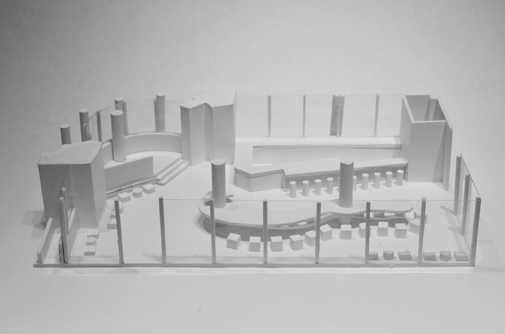
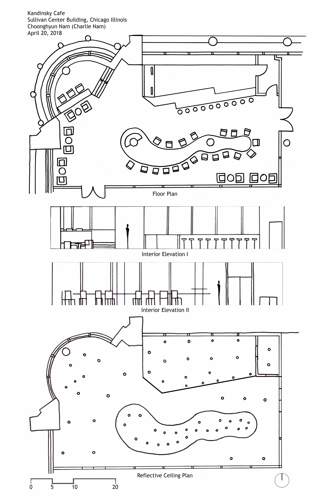

Kandinsky Café
2018
The project involved designing a café, drawing inspiration from the art of Kandinsky. The designated space for this design is situated at the northwest corner of Louis Sullivan's historic Carson Prairie Scott building. I created architectural-scale sketched design drawings, including a floor plan, reflected ceiling plan, and interior elevations, which were superimposed over the original floor plan space. To infuse a touch of Kandinsky's art, I incorporated unique shapes into the design, notably in the main table and countertop. Using my floor plan and elevations, I constructed a 1/4-inch scale presentation model of the café, showcasing the walls, countertops, floor levels, furniture, and other elements.



